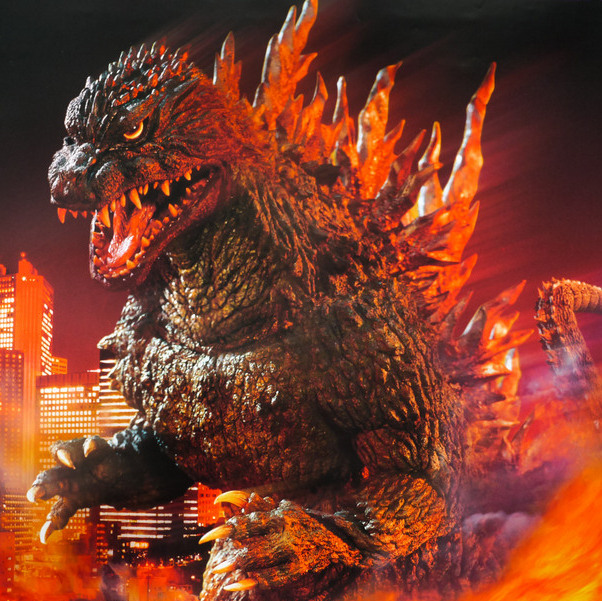
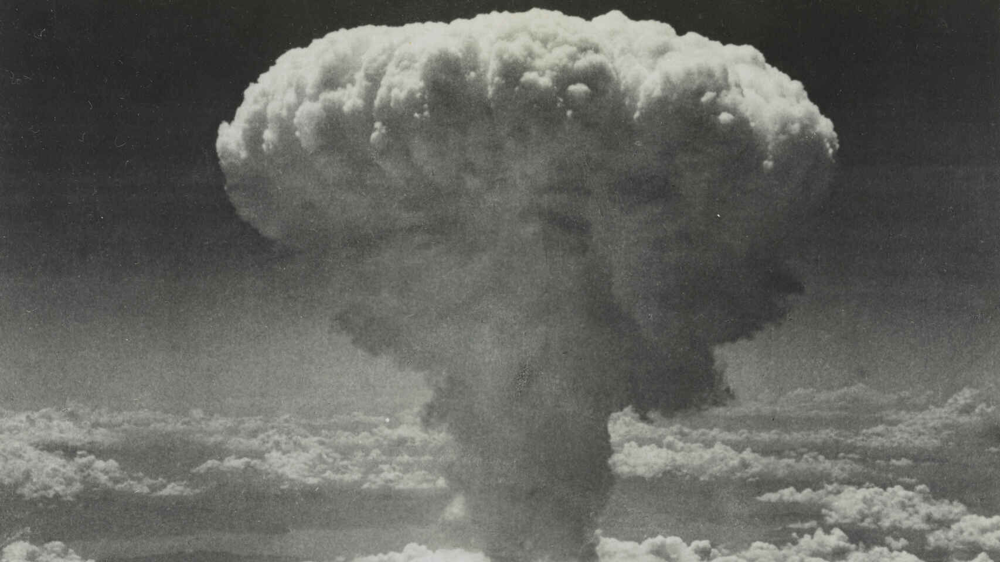

Historia
Godzilla o en japonés Gojira, nació en 1954 con el estreno de la película (Godzilla, Japón bajo el terror
del monstruo). Creado por los Estudios Tōhō
¿Bomba atomica?

Se dice que crearon al personaje de Godzilla después del lanzamiento de las bombas de Hiroshima y
Nagasaki como representación del miedo que la sociedad japonesa sufrió después de la Segunda Guerra
Mundial (De ahí que su origen tenga que ver con la bomba atomica).
El nombre de Gojira surge de la unión de dos palabras, gorira (ゴリラ), gorila en español y kujira (鯨, くじら),
que significa ballena.
Las películas se engloban dentro de un género de cine japonés llamado Kaiju
(怪獣 ), que quiere decir bestia extraña o gigante. Su traducción occidentalizada sería monstruo. En la
filmografía japonesa Kaiju, hay una gran variedad de monstruos, como Mothra, Anguirus, Rodan, Gamera y
el King Ghidorah, pero famoso monstruo es el más conocido dentro y fuera de Japón. En muchas ocasiones
la ciudad elegida para localizar la llegada de los monstruos ha sido Tokio.